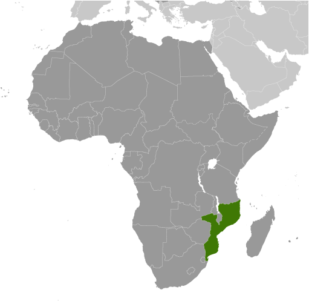
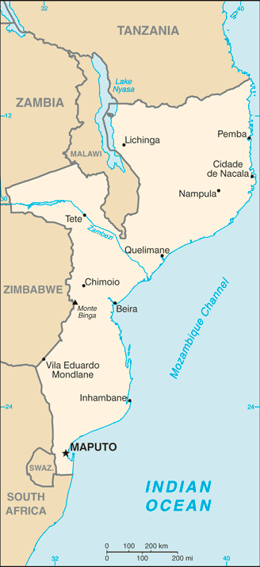
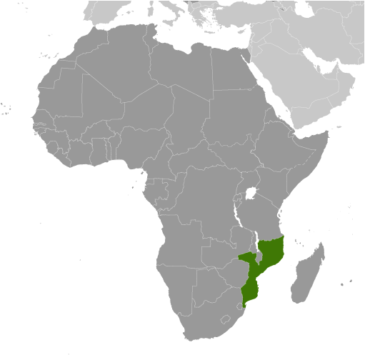
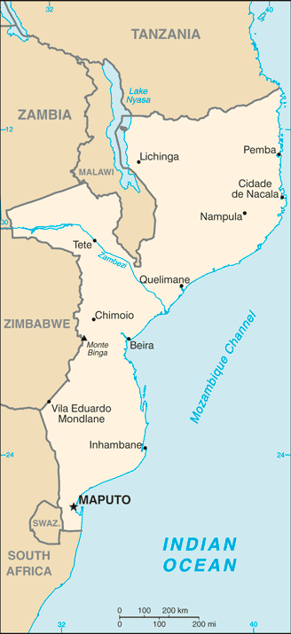

Africa :: MOZAMBIQUE
Introduction :: MOZAMBIQUE
-
Almost five centuries as a Portuguese colony came to a close with independence in 1975. Large-scale emigration, economic dependence on South Africa, a severe drought, and a prolonged civil war hindered the country's development until the mid-1990s. The ruling Front for the Liberation of Mozambique (FRELIMO) party formally abandoned Marxism in 1989, and a new constitution the following year provided for multiparty elections and a free market economy. A UN-negotiated peace agreement between FRELIMO and rebel Mozambique National Resistance (RENAMO) forces ended the fighting in 1992. In 2004, Mozambique underwent a delicate transition as Joaquim CHISSANO stepped down after 18 years in office. His elected successor, Armando GUEBUZA, served two terms and then passed executive power to Filipe NYUSI in 2014. RENAMO’s residual armed forces have continued to engage in a low-level insurgency since 2012.
Geography :: MOZAMBIQUE
-
Southeastern Africa, bordering the Mozambique Channel, between South Africa and Tanzania18 15 S, 35 00 EAfricatotal: 799,380 sq kmland: 786,380 sq kmwater: 13,000 sq kmcountry comparison to the world: 36slightly more than five times the size of Georgia; slightly less than twice the size of Californiatotal: 4,783 kmborder countries (6): Malawi 1,498 km, South Africa 496 km, Swaziland 108 km, Tanzania 840 km, Zambia 439 km, Zimbabwe 1,402 km2,470 kmterritorial sea: 12 nmexclusive economic zone: 200 nmtropical to subtropicalmostly coastal lowlands, uplands in center, high plateaus in northwest, mountains in westmean elevation: 345 melevation extremes: lowest point: Indian Ocean 0 mhighest point: Monte Binga 2,436 mcoal, titanium, natural gas, hydropower, tantalum, graphiteagricultural land: 56.3%arable land 6.4%; permanent crops 0.3%; permanent pasture 49.6%forest: 43.7%other: 0% (2011 est.)1,180 sq km (2012)three large populations clusters are found along the southern coast between Maputo and Inhambane, in the central area between Beira and Chimoio along the Zambezi River, and in and around the northern cities of Nampula, Cidade de Nacala, and Pemba; the northwest and southwest are the least populated areassevere droughts; devastating cyclones and floods in central and southern provincesincreased migration of the population to urban and coastal areas with adverse environmental consequences; desertification; pollution of surface and coastal waters; elephant poaching for ivory is a problemparty to: Biodiversity, Climate Change, Climate Change-Kyoto Protocol, Desertification, Endangered Species, Hazardous Wastes, Law of the Sea, Ozone Layer Protection, Ship Pollution, Wetlandssigned, but not ratified: none of the selected agreementsthe Zambezi River flows through the north-central and most fertile part of the country
People and Society :: MOZAMBIQUE
-
26,573,706note: estimates for this country explicitly take into account the effects of excess mortality due to AIDS; this can result in lower life expectancy, higher infant mortality, higher death rates, lower population growth rates, and changes in the distribution of population by age and sex than would otherwise be expected (July 2017 est.)country comparison to the world: 50noun: Mozambican(s)adjective: MozambicanAfrican 99.66% (Makhuwa, Tsonga, Lomwe, Sena, and others), Europeans 0.06%, Euro-Africans 0.2%, Indians 0.08%Emakhuwa 25.3%, Portuguese (official) 10.7%, Xichangana 10.3%, Cisena 7.5%, Elomwe 7%, Echuwabo 5.1%, other Mozambican languages 30.1%, other 0.3%, unspecified 3.7% (2007 est.)Roman Catholic 28.4%, Muslim 17.9%, Zionist Christian 15.5%, Protestant 12.2% (includes Pentecostal 10.9% and Anglican 1.3%), other 6.7%, none 18.7%, unspecified 0.7% (2007 est.)Mozambique is a poor, sparsely populated country with high fertility and mortality rates and a rapidly growing youthful population – 45% of the population is younger than 15. Mozambique’s high poverty rate is sustained by natural disasters, disease, high population growth, low agricultural productivity, and the unequal distribution of wealth. The country’s birth rate is among the world’s highest, averaging around more than 5 children per woman (and higher in rural areas) for at least the last three decades. The sustained high level of fertility reflects gender inequality, low contraceptive use, early marriages and childbearing, and a lack of education, particularly among women. The high population growth rate is somewhat restrained by the country’s high HIV/AIDS and overall mortality rates. Mozambique ranks among the worst in the world for HIV/AIDS prevalence, HIV/AIDS deaths, and life expectancy at birth.Mozambique is predominantly a country of emigration, but internal, rural-urban migration has begun to grow. Mozambicans, primarily from the country’s southern region, have been migrating to South Africa for work for more than a century. Additionally, approximately 1.7 million Mozambicans fled to Malawi, South Africa, and other neighboring countries between 1979 and 1992 to escape from civil war. Labor migrants have usually been men from rural areas whose crops have failed or who are unemployed and have headed to South Africa to work as miners; multiple generations of the same family often become miners. Since the abolition of apartheid in South Africa in 1991, other job opportunities have opened to Mozambicans, including in the informal and manufacturing sectors, but mining remains their main source of employment.0-14 years: 44.72% (male 5,975,407/female 5,908,511)15-24 years: 21.57% (male 2,824,012/female 2,907,033)25-54 years: 27.42% (male 3,409,425/female 3,875,837)55-64 years: 3.4% (male 435,203/female 468,939)65 years and over: 2.9% (male 352,546/female 416,793) (2017 est.)total dependency ratio: 93.5youth dependency ratio: 87.5elderly dependency ratio: 6.1potential support ratio: 16.5 (2015 est.)total: 17.2 yearsmale: 16.6 yearsfemale: 17.8 years (2017 est.)country comparison to the world: 2222.46% (2017 est.)country comparison to the world: 2138.1 births/1,000 population (2017 est.)country comparison to the world: 1111.6 deaths/1,000 population (2017 est.)country comparison to the world: 25-1.9 migrant(s)/1,000 population (2017 est.)country comparison to the world: 161three large populations clusters are found along the southern coast between Maputo and Inhambane, in the central area between Beira and Chimoio along the Zambezi River, and in and around the northern cities of Nampula, Cidade de Nacala, and Pemba; the northwest and southwest are the least populated areasurban population: 32.8% of total population (2017)rate of urbanization: 3.36% annual rate of change (2015-20 est.)MAPUTO (capital) 1.187 million; Matola 937,000 (2015)at birth: 1.02 male(s)/female0-14 years: 1.01 male(s)/female15-24 years: 0.97 male(s)/female25-54 years: 0.88 male(s)/female55-64 years: 0.92 male(s)/female65 years and over: 0.85 male(s)/femaletotal population: 0.96 male(s)/female (2016 est.)18.9 yearsmedian age at first birth among women 25-29 (2011 est.)489 deaths/100,000 live births (2015 est.)country comparison to the world: 21total: 65.9 deaths/1,000 live birthsmale: 67.9 deaths/1,000 live birthsfemale: 63.8 deaths/1,000 live births (2017 est.)country comparison to the world: 13total population: 53.7 yearsmale: 52.9 yearsfemale: 54.5 years (2017 est.)country comparison to the world: 2155.08 children born/woman (2017 est.)country comparison to the world: 1111.6% (2011)7% of GDP (2014)country comparison to the world: 820.06 physicians/1,000 population (2013)0.7 beds/1,000 population (2011)improved:urban: 80.6% of populationrural: 37% of populationtotal: 51.1% of populationunimproved:urban: 19.4% of populationrural: 63% of populationtotal: 48.9% of population (2015 est.)improved:urban: 42.4% of populationrural: 10.1% of populationtotal: 20.5% of populationunimproved:urban: 57.6% of populationrural: 89.9% of populationtotal: 79.5% of population (2015 est.)12.3% (2016 est.)country comparison to the world: 81.8 million (2016 est.)country comparison to the world: 462,000 (2016 est.)country comparison to the world: 4degree of risk: very highfood or waterborne diseases: bacterial and protozoal diarrhea, hepatitis A, and typhoid fevervectorborne diseases: malaria and dengue feverwater contact disease: schistosomiasisanimal contact disease: rabies (2016)7.2% (2016)country comparison to the world: 16015.6% (2011)country comparison to the world: 446.5% of GDP (2013)country comparison to the world: 78definition: age 15 and over can read and writetotal population: 58.8%male: 73.3%female: 45.4% (2015 est.)total: 10 yearsmale: 10 yearsfemale: 9 years (2014)total: 39.3%male: 40.2%female: 38.7% (2012 est.)
Government :: MOZAMBIQUE
-
conventional long form: Republic of Mozambiqueconventional short form: Mozambiquelocal long form: Republica de Mocambiquelocal short form: Mocambiqueformer: Portuguese East Africaetymology: named for the offshore island of Mozambique; the island was apparently named after Mussa al-BIK, an influential Arab slave trader who set himself up as sultan on the island in the 15th centurypresidential republicname: Maputogeographic coordinates: 25 57 S, 32 35 Etime difference: UTC+2 (7 hours ahead of Washington, DC, during Standard Time)10 provinces (provincias, singular - provincia), 1 city (cidade)*; Cabo Delgado, Gaza, Inhambane, Manica, Maputo, Cidade de Maputo*, Nampula, Niassa, Sofala, Tete, Zambezia25 June 1975 (from Portugal)Independence Day, 25 June (1975)history: previous 1975, 1990; latest adopted 16 November 2004, effective 21 December 2004amendments: proposed by the president of the republic or supported by at least one-third of the Assembly of the Republic membership; passage of amendments affecting constitutional provisions including the independence and sovereignty of the state, the republican form of government, basic rights and freedoms, and universal suffrage requires at least a two-thirds majority vote by the Assembly and approval in a referendum; referenda not required for passage of other amendments; amended 2007 (2017)mixed legal system of Portuguese civil law, and customary law; note - in rural, predominately Muslim villages with no formal legal system, Islamic law may be appliedhas not submitted an ICJ jurisdiction declaration; non-party state to the ICCtcitizenship by birth: nocitizenship by descent only: at least one parent must be a citizen of Mozambiquedual citizenship recognized: noresidency requirement for naturalization: 5 years18 years of age; universalchief of state: President Filipe Jacinto NYUSI (since 15 January 2015)head of government: President Filipe Jacinto NYUSI (since 15 January 2015); Prime Minister Carlos Agostinho DO ROSARIO (since 17 January 2015); President Alberto Clementino Antonio VAQUINA removed from office 9 January 2015cabinet: Cabinet appointed by the presidentelections/appointments: president elected directly elected by absolute majority popular vote in 2 rounds if needed for a 5-year term (eligible for 2 consecutive terms); election last held on 15 October 2014 (next to be held in October 2019); prime minister appointed by the presidentelection results: Filipe NYUSI elected president; percent of vote - Filipe NYUSI (FRELIMO) 57.0%, Afonso DHLAKAMA (RENAMO) 36.6%, Daviz SIMANGO (MDM) 6.4%description: unicameral Assembly of the Republic or Assembleia da Republica (250 seats; members directly elected in single- and multi-seat constituencies by proportional representation vote and 2 members representing Mozambicans abroad who are appointed by the elected party; members serve 5-year terms)elections: last held on 15 October 2014 (next to be held in October 2019)election results: percent of vote by party - FRELIMO 55.9%, RENAMO 32.5%, MDM 8.4%, other 3.3%; seats by party - FRELIMO 144, RENAMO 89, MDM 17highest court(s): Supreme Court (consists of the court president, vice president, and 5 judges); Constitutional Council (consists of 7 judges); note - the Higher Council of the Judiciary is responsible for judiciary management and disciplinejudge selection and term of office: Supreme Court president and vice president appointed by Mozambique president in consultation with the Higher Council of the Judiciary (CSMJ) and with ratification by the legislature; other judges elected by the legislature; judges serve 5-year renewable terms; Constitutional Council judges appointed - 1 by the president, 5 by the legislature, and 1 by the CSMJ; judges serve 5-year nonrenewable termssubordinate courts: Administrative Court (capital city only); provincial courts or Tribunais Judicias de Provincia; District Courts or Tribunais Judicias de Districto; customs courts; maritime courts; courts marshal; labor courts; community courtsDemocratic Movement of Mozambique (Movimento Democratico de Mocambique) or MDM [Daviz SIMANGO]Front for the Liberation of Mozambique (Frente de Liberatacao de Mocambique) or FRELIMO [Filipe NYUS]Mozambique National Resistance (Resistencia Nacional Mocambicana) or RENAMO [Afonso DHLAKAMA]Mozambican League of Human Rights (Liga Mocambicana dos Direitos Humanos) or LDH [Alice MABOTA, president]Youth Parliament (Parlamento Juvenil) [Salomao MUCHANGA]ACP, AfDB, AU, C, CD, CPLP, EITI (compliant country), FAO, G-77, IAEA, IBRD, ICAO, ICC (NGOs), ICRM, IDA, IDB, IFAD, IFC, IFRCS, IHO, ILO, IMF, IMO, IMSO, Interpol, IOC, IOM, IPU, ISO (correspondent), ITSO, ITU, ITUC (NGOs), MIGA, NAM, OIC, OIF (observer), OPCW, SADC, UN, UNCTAD, UNESCO, UNHCR, UNIDO, Union Latina, UNISFA, UNWTO, UPU, WCO, WFTU (NGOs), WHO, WIPO, WMO, WTOchief of mission: Ambassador Carlos DOS SANTOS (since 28 January 2016)chancery: 1525 New Hampshire Avenue NW, Washington, DC 20036telephone: [1] (202) 293-7146FAX: [1] (202) 835-0245chief of mission: Ambassador H. Dean PITTMAN (since 18 February 2016)embassy: Avenida Kenneth Kuanda 193, Maputomailing address: P.O. Box 783, Maputotelephone: [258] (21) 49 2797FAX: [258] (21) 49 0114three equal horizontal bands of green (top), black, and yellow with a red isosceles triangle based on the hoist side; the black band is edged in white; centered in the triangle is a yellow five-pointed star bearing a crossed rifle and hoe in black superimposed on an open white book; green represents the riches of the land, white peace, black the African continent, yellow the country's minerals, and red the struggle for independence; the rifle symbolizes defense and vigilance, the hoe refers to the country's agriculture, the open book stresses the importance of education, and the star represents Marxism and internationalismnote: one of only two national flags featuring a firearm, the other is Guatemalanational colors: green, black, yellow, white, redname: "Patria Amada" (Lovely Fatherland)lyrics/music: Salomao J. MANHICA/unknownnote: adopted 2002
Economy :: MOZAMBIQUE
-
At independence in 1975, Mozambique was one of the world's poorest countries. Socialist policies, economic mismanagement, and a brutal civil war from 1977 to 1992 further impoverished the country. In 1987, the government embarked on a series of macroeconomic reforms designed to stabilize the economy. These steps, combined with donor assistance and with political stability since the multi-party elections in 1994, propelled the country’s GDP from $4 billion in 1993, following the war, to about $35 billion in 2016. Fiscal reforms, including the introduction of a value-added tax and reform of the customs service, have improved the government's revenue collection abilities.In spite of these gains, more than half the population remains below the poverty line. Subsistence agriculture continues to employ the vast majority of the country's work force. Citizens rioted in September 2010 after fuel, water, electricity, and bread price increases were announced. In an attempt to lessen the negative impact on the population, the government implemented subsidies, decreased taxes and tariffs, and instituted other fiscal measures.A substantial trade imbalance persists, although aluminum production from the Mozal Aluminum Smelter has significantly boosted export earnings in recent years. In 2012, the Mozambican Government took over Portugal's last remaining share in the Cahora Bassa Hydroelectricity Company, a significant contributor to the Southern African Power Pool. The government has plans to expand the Cahora Bassa Dam and build additional dams to increase its electricity exports and fulfill the needs of its burgeoning domestic industries.Mozambique's once substantial foreign debt was reduced through forgiveness and rescheduling under the IMF's Heavily Indebted Poor Countries (HIPC) and Enhanced HIPC initiatives. However, in 2016, information surfaced revealing that the Mozambican Government was responsible for over $2 billion in government-backed loans originally secured between 2012-14 by state-owned defense and security companies without parliamentary approval or national budget inclusion, which prompted the IMF and international donors to halt direct budget support to the Government of Mozambique. This sizable external debt burden, donor withdrawal, elevated inflation, and currency depreciation contributed to weak growth in 2016 and forebode weaker economic growth in the next few years.Mozambique grew at an average annual rate of 6%-8% in the decade leading up to 2015, one of Africa's strongest performances, but growth slowed in 2016 to about 3.5% as low commodity prices reduced export earnings. However, many forecasts predict an increase in growth in 2017 as coal exports grow. Two major international consortiums are seeking approval to develop massive natural gas deposits off the coast of Cabo Delgado province, in what has the potential to become the largest infrastructure project in Africa. The government predicts sales of liquefied natural gas from these projects could generate several billion dollars in revenues annually sometime after 2022.$35.08 billion (2016 est.)$33.35 billion (2015 est.)$30.96 billion (2014 est.)note: data are in 2016 dollarscountry comparison to the world: 123$11.27 billion (2016 est.)3.8% (2016 est.)6.6% (2015 est.)7.4% (2014 est.)country comparison to the world: 83$1,200 (2016 est.)$1,200 (2015 est.)$1,200 (2014 est.)note: data are in 2016 dollarscountry comparison to the world: 2225.6% of GDP (2016 est.)5% of GDP (2015 est.)17.2% of GDP (2014 est.)country comparison to the world: 169household consumption: 71.5%government consumption: 28.2%investment in fixed capital: 20.5%investment in inventories: 22.1%exports of goods and services: 34.8%imports of goods and services: -77.2% (2016 est.)agriculture: 24.8%industry: 21.6%services: 53.6% (2016 est.)cotton, cashew nuts, sugarcane, tea, cassava (manioc, tapioca), corn, coconuts, sisal, citrus and tropical fruits, potatoes, sunflowers; beef, poultryaluminum, petroleum products, chemicals (fertilizer, soap, paints), textiles, cement, glass, asbestos, tobacco, food, beverages5.4% (2016 est.)country comparison to the world: 4412.5 million (2016 est.)country comparison to the world: 45agriculture: 81%industry: 6%services: 13% (1997 est.)22.4% (2014 est.)17% (2007 est.)country comparison to the world: 18846.1% (2015 est.)lowest 10%: 1.9%highest 10%: 36.7% (2008)45.6 (2008)47.3 (2002)country comparison to the world: 37revenues: $2.514 billionexpenditures: $3.548 billion (2016 est.)22.3% of GDP (2016 est.)country comparison to the world: 134-9.2% of GDP (2016 est.)country comparison to the world: 195121.2% of GDP (2016 est.)72.1% of GDP (2015 est.)country comparison to the world: 8calendar year19.2% (2016 est.)3.6% (2015 est.)country comparison to the world: 2199.5% (17 January 2013)3.25% (31 December 2010)country comparison to the world: 2721.18% (31 December 2016 est.)14.87% (31 December 2015 est.)country comparison to the world: 13$3.411 billion (31 December 2016 est.)$4.758 billion (31 December 2015 est.)country comparison to the world: 111$5.142 billion (31 December 2016 est.)$7.265 billion (31 December 2015 est.)country comparison to the world: 126$4.242 billion (31 December 2016 est.)$5.565 billion (31 December 2015 est.)country comparison to the world: 129$NA$-4.307 billion (2016 est.)$-5.968 billion (2015 est.)country comparison to the world: 171$3.328 billion (2016 est.)$3.413 billion (2015 est.)country comparison to the world: 119aluminum, prawns, cashews, cotton, sugar, citrus, timber; bulk electricityNetherlands 30.8%, India 15.2%, South Africa 14.6% (2016)$4.733 billion (2016 est.)$7.577 billion (2015 est.)country comparison to the world: 124machinery and equipment, vehicles, fuel, chemicals, metal products, foodstuffs, textilesSouth Africa 36.6%, China 10.9%, Netherlands 7.8%, Bahrain 5.2%, France 4.2%, Portugal 4.2%, UAE 4.1% (2016)$2.081 billion (31 December 2016 est.)$2.582 billion (31 December 2015 est.)country comparison to the world: 118$10.48 billion (31 December 2016 est.)$10.06 billion (31 December 2015 est.)country comparison to the world: 110meticais (MZM) per US dollar -63.067 (2016 est.)63.067 (2015 est.)39.983 (2014 est.)31.367 (2013 est.)28.38 (2012 est.)
Energy :: MOZAMBIQUE
-
population without electricity: 15,700,000electrification - total population: 39%electrification - urban areas: 66%electrification - rural areas: 27% (2013)19.58 billion kWh (2015 est.)country comparison to the world: 7613.86 billion kWh (2015 est.)country comparison to the world: 8212.88 billion kWh (2015 est.)country comparison to the world: 1810.55 billion kWh (2015 est.)country comparison to the world: 252.556 million kW (2015 est.)country comparison to the world: 10414% of total installed capacity (2015 est.)country comparison to the world: 1980% of total installed capacity (2015 est.)country comparison to the world: 14985.6% of total installed capacity (2015 est.)country comparison to the world: 120.5% of total installed capacity (2015 est.)country comparison to the world: 1490 bbl/day (2016 est.)country comparison to the world: 1740 bbl/day (2014 est.)country comparison to the world: 1670 bbl/day (2014 est.)country comparison to the world: 1670 bbl (1 January 2017 es)country comparison to the world: 1720 bbl/day (2014 est.)country comparison to the world: 17923,000 bbl/day (2015 est.)country comparison to the world: 1310 bbl/day (2014 est.)country comparison to the world: 18321,890 bbl/day (2014 est.)country comparison to the world: 1155.695 billion cu m (2015 est.)country comparison to the world: 502.726 billion cu m (2015 est.)country comparison to the world: 813.8 billion cu m (2015 est.)country comparison to the world: 340 cu m (2013 est.)country comparison to the world: 1602.832 trillion cu m (1 January 2017 es)country comparison to the world: 133.9 million Mt (2013 est.)country comparison to the world: 134
Communications :: MOZAMBIQUE
-
total subscriptions: 84,310subscriptions per 100 inhabitants: less than 1 (July 2016 est.)country comparison to the world: 151total: 18,404,857subscriptions per 100 inhabitants: 71 (July 2016 est.)country comparison to the world: 59general assessment: the mobile segment has shown strong growth since the introduction of competition in 2003; poor fixed-line infrastructure means most Internet access is through mobile accountsdomestic: extremely low fixed-line teledensity contrasts with rapid growth in the mobile-cellular network; three mobile-cellular operators provide coverage that includes all the main cities and key roads; mobile-cellular teledensity now about 70 per 100 personsinternational: country code - 258; landing point for the EASSy and SEACOM fiber-optic submarine cable systems; satellite earth stations - 5 Intelsat (2 Atlantic Ocean and 3 Indian Ocean) (2016)1 state-run TV station supplemented by private TV station; Portuguese state TV's African service, RTP Africa, and Brazilian-owned TV Miramar are available; state-run radio provides nearly 100% territorial coverage and broadcasts in multiple languages; a number of privately owned and community-operated stations; transmissions of multiple international broadcasters are available (2007).mztotal: 4,543,284percent of population: 17.5% (July 2016 est.)country comparison to the world: 111
Transportation :: MOZAMBIQUE
-
number of registered air carriers: 3inventory of registered aircraft operated by air carriers: 16annual passenger traffic on registered air carriers: 686,892annual freight traffic on registered air carriers: 5,138,916 mt-km (2015)C9 (2016)98 (2013)country comparison to the world: 57total: 21over 3,047 m: 12,438 to 3,047 m: 21,524 to 2,437 m: 9914 to 1,523 m: 5under 914 m: 4 (2017)total: 772,438 to 3,047 m: 11,524 to 2,437 m: 9914 to 1,523 m: 29under 914 m: 38 (2013)gas 972 km; refined products 278 km (2013)total: 4,787 kmnarrow gauge: 4,787 km 1.067-m gauge (2014)country comparison to the world: 39total: 31,083 kmpaved: 7,365 kmunpaved: 23,718 km (2015)country comparison to the world: 96460 km (Zambezi River navigable to Tete and along Cahora Bassa Lake) (2010)country comparison to the world: 85total: 2by type: cargo 2foreign-owned: 2 (Belgium 2) (2010)country comparison to the world: 145major seaport(s): Beira, Maputo, Nacala
Military and Security :: MOZAMBIQUE
-
1.03% of GDP (2016)0.99% of GDP (2015)1.02% of GDP (2014)0.99% of GDP (2013)0.91% of GDP (2012)Mozambique Armed Defense Forces (Forcas Armadas de Defesa de Mocambique, FADM): Mozambique Army, Mozambique Navy (Marinha de Guerra de Mocambique, MGM), Mozambique Air Force (Forca Aerea de Mocambique, FAM) (2012)registration for military service is mandatory for all males and females at 18 years of age; 18-35 years of age for selective compulsory military service; 18 years of age for voluntary service; 2-year service obligation; women may serve as officers or enlisted (2012)
Transnational Issues :: MOZAMBIQUE
-
South Africa has placed military units to assist police operations along the border of Lesotho, Zimbabwe, and Mozambique to control smuggling, poaching, and illegal migrationIDPs: 15,000 (2016)southern African transit point for South Asian hashish and heroin, and South American cocaine probably destined for the European and South African markets; producer of cannabis (for local consumption) and methaqualone (for export to South Africa); corruption and poor regulatory capability make the banking system vulnerable to money laundering, but the lack of a well-developed financial infrastructure limits the country's utility as a money-laundering center